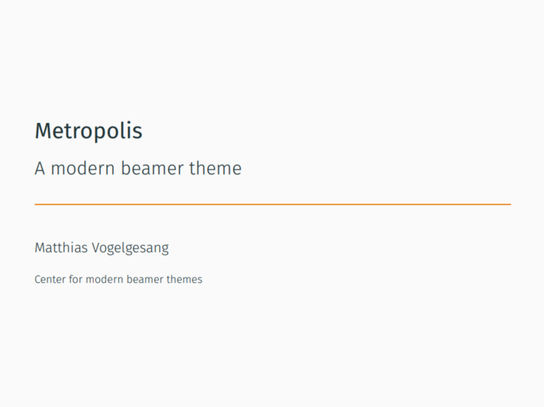

【スライド】Beamer の Metropolis テーマを Reveal.js で再現したい
Quarto
Reveal.js
R
Quarto 経由で Beamer 風のスライドを作ろう！
Metropolis との出会い
\(\LaTeX\) の Beamer で使える Metropolis テーマがおしゃれだと思ったので使ってみたい！というモチベーションです。
普段は Reveal.js を使っているので、Metropolis テーマを Reveal.js で再現したいと思い、できる限り頑張ってみました。

Reveal.js で再現
Note
こちらの GitHub リポジトリに、Metropolis テーマをもとに作成した scss ファイルがあります。
私もよくわからずに作成しましたが、scss ファイルはデザインを指定しているファイル、みたいな理解で良いと思います（笑）
使い方
このリポジトリをクローン、もしくは scss ファイルをダウンロード
- リポジトリ自体は整えてないので、クローンしなくても scss ファイルがダウンロードできれば大丈夫です。
Quarto コードがあるディレクトリに scss ファイルを配置
- 要は
.qmdファイルと.scssファイルが同じフォルダに入っていれば大丈夫です。
- 要は
.qmdファイルに以下のように記述
Quarto
---
title: "Title"
author: "Author"
institute: "Institute"
date: "2024-05-12"
format:
revealjs:
theme:
- default
- metropolis.scss
slide-number: true
date-format: long
---.qmdファイルをレンダリング- R Markdown で言うところの Knit です。
デモ
Metropolis からヘッダー部分をアレンジしています1。
まとめ
Reveal.js はシンプルでデザイン性も高く、コードの実行結果もそのまま表示できるというメリットがあります。
ぜひ試しに使ってみてください。
ちなみに、Quarto では Beamer も使えますので、普通に Metropolitan 本家を使うこともできます。単に普段使っている Reveal.js で使いたかったから作ったというだけです。笑
参考
追記
2024/5/13：このテーマをもとに、Quarto でスライドを作る方法を紹介しました。こちらも併せてご覧ください。
注
塗りつぶしがうまくいかなかっただけです。↩︎